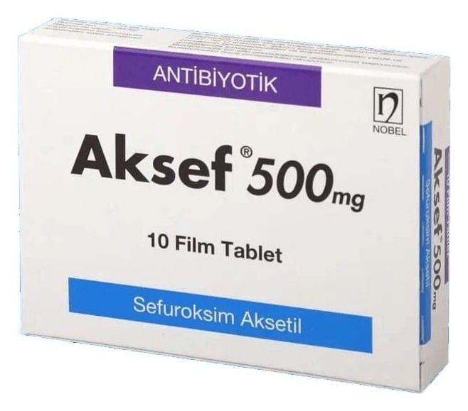

Aksef 500 mg Film Tablet, 20 Adet

Ne için kullanılır
KT · Bölüm 1AKSEF, bakteriler üzerinde öldürücü etkiye sahip, erişkin ve çocuklarda kullanılan sefalosporin grubu bir antibiyotiktir. Her tablet etkin madde olarak 500 mg sefuroksim içerir.
AKSEF, 10, 14 ve 20 tabletlik blisterler halinde bulunmaktadır.
AKSEF aşağıdaki enfeksiyonların tedavisinde kullanılır: • Boğaz enfeksiyonları (bademcik ve solunum yolu enfeksiyonları (tonsillit, farenjit)) • Sinüs iltihabı (sinüzit) • Orta kulak iltihabı • Akciğer veya göğüs enfeksiyonları • Üriner sistem enfeksiyonları • Cilt ve yumuşak doku enfeksiyonları
AKSEF ayrıca aşağıdaki durumda kullanılabilir: • Lyme hastalığının (kene adı verilen parazitlerin yaydığı bir enfeksiyon) tedavisinde
Doktorunuz enfeksiyonunuza neden olan bakterilerin tipini test edebilir ve tedaviniz sırasında
bakterilerin AKSEF’e duyarlı olup olmadıklarını izleyebilir.